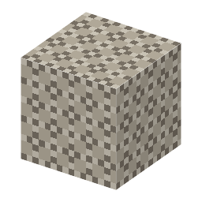

説明
①子ども まだ固まっていないコンクリート。水にふれると固まる。
②学生 消石灰＋凝灰岩2＋砂利2 → 4。置くと砂のように落ちる。水のとなりに置く（水の中に流しこむ）と、ローマンコンクリートに固まる。
③大人 水が入ると、石灰と火山灰の反応が始まって固まる（水硬性）。ふつうの石灰のしっくいは空気の CO2 で固まるので、水の中では固まらない。
④ガチ ローマ人は木の型わくを海の中に沈めて、その中に生コンを流しこんで港の壁を作った。
作り方
使い道
（このアイテムを使うレシピは無い）